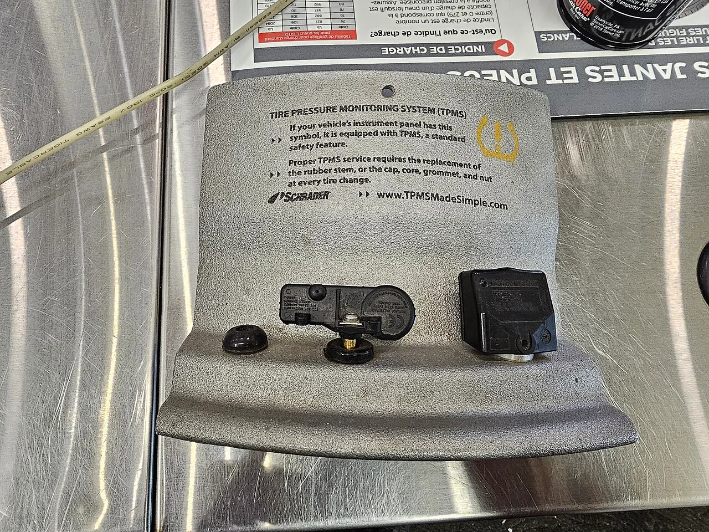
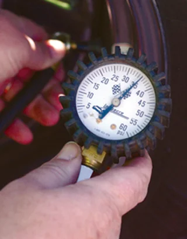

▲ TPMS는 네 바퀴의 공기압을 실시간으로 감지해 계기판에 표시하거나 경고등으로 알려주는 장치다 ⓒ WillisMoon, Wikimedia Commons (CC BY 4.0)
운전 중 갑자기 계기판에 노란색 말굽 모양 안에 느낌표가 뜬 경고등을 본 적이 있을 겁니다. 바로 TPMS, 타이어 공기압 경보 시스템 경고등입니다. 그런데 이 경고등의 의미를 정확히 아는 운전자는 생각보다 많지 않습니다. 미국 도로교통안전국(NHTSA) 조사에 따르면 운전자의 42%가 이 경고등을 제대로 알아보지 못했고, 심지어 경고등을 알아본 운전자 중에서도 10명 중 1명은 "봤지만 그냥 계속 운전했다"고 답했습니다. 문제는 이 경고등을 무시한 채 달리는 동안에도 타이어는 계속 열을 먹고 있다는 점입니다. 공기압이 부족한 타이어는 정상 타이어보다 사고 위험이 3배 가까이 높은 것으로 조사됐습니다. TPMS 경고등이 뜨는 이유와, 지금 당장 확인해야 할 대처 순서를 짚어봤습니다.
1. TPMS 경고등, 정확히 뭘 감지하는 걸까

▲ 계기판에 뜨는 말굽+느낌표 모양 아이콘이 TPMS 경고등이다. 사진 속 검은 부품이 휠 안쪽에 붙어 실시간으로 공기압을 재는 센서다 ⓒ Sinafe, Wikimedia Commons (CC BY-SA 4.0)
TPMS는 크게 두 방식으로 작동합니다. 직접식은 각 휠 안쪽에 붙은 압력 센서가 실제 공기압 수치를 무선으로 계기판에 전송하는 방식이고, 간접식은 공기압이 낮아진 타이어일수록 회전 반경이 작아져 더 빨리 도는 원리를 ABS 센서로 감지하는 방식입니다. 미국 연방 기준으로는 권장 공기압보다 25% 이상 낮아지면 경고등이 들어오도록 규정돼 있습니다. 국내에서는 2010년 관련 규정이 마련돼 2013년 1월부터 신규 모델에, 2014년 6월부터는 국내에서 팔리는 모든 승용차에 TPMS 장착이 의무화됐습니다.
| 패턴 | 원인 | 대처 |
|---|---|---|
| 계속 켜져 있음 | 실제 공기압 부족 | 공기압 보충하면 대부분 해결 |
| 깜빡이다 켜져서 유지 | 센서 배터리 방전·시스템 오작동 | 정비소 TPMS 점검 필요 |
2. 경고등이 켜졌다면, 이 순서대로 하세요

▲ 경고등이 켜지면 가장 먼저 공기압 게이지로 네 바퀴 압력을 직접 재보는 것이 순서다 ⓒ U.S. Air Force photo by Airman Frank Snider, Wikimedia Commons (Public Domain)
경고등이 켜졌다고 곧바로 갓길에 세울 필요는 없습니다. 다만 무시하고 계속 달리는 것도 안 됩니다. 우선 속도를 줄이고 급가속·급제동을 피하면서 가까운 주유소나 정비소로 이동하세요. 도착하면 네 바퀴 모두 공기압 게이지로 직접 재보는 것이 첫 순서입니다. 타이어 옆면이나 운전석 문틀 안쪽에 적힌 제조사 권장 공기압과 비교해 부족한 만큼 채우면 대부분 경고등은 꺼집니다.